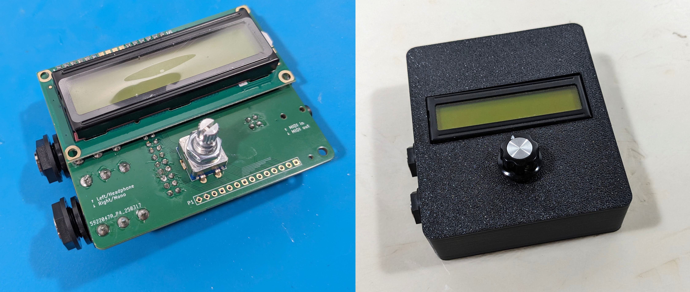

SquishBox Documentation¶
The SquishBox is an add-on board for the Raspberry Pi 3B+/4 that bundles a DAC, 1/4” ouputs, MIDI in/out with minijacks, a 16x2 LCD, and a pushbutton rotary encoder. It is designed to be an embedded computer for audio applications, such as a synth module or audio player. It has a python API for easy access to buttons, LCD, and system functions. Several pre-built apps are included.
The SquishBox can be fabricated from scratch using the included design files, or obtained as a kit or fully assembled device from the Geek Funk Labs store. Software is installed in an existing Raspberry Pi OS using a command-line installer script.

Assembled SquishBox electronics (left) and enclosure (right)¶
Contents: